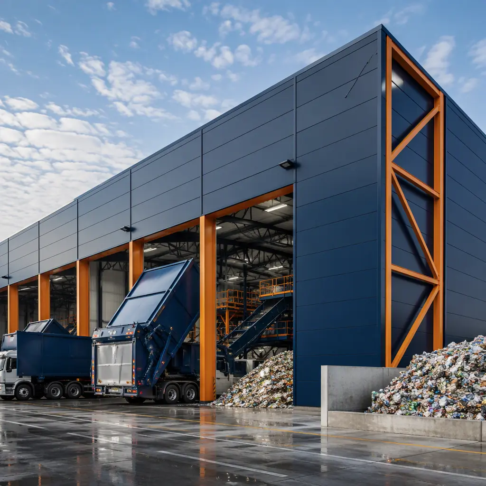
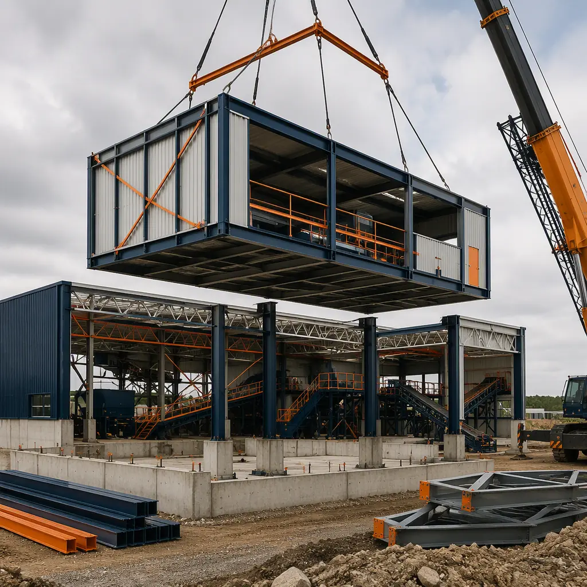
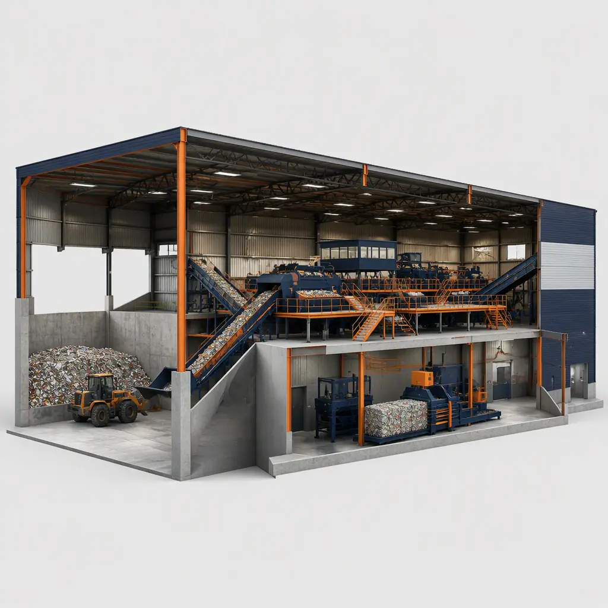
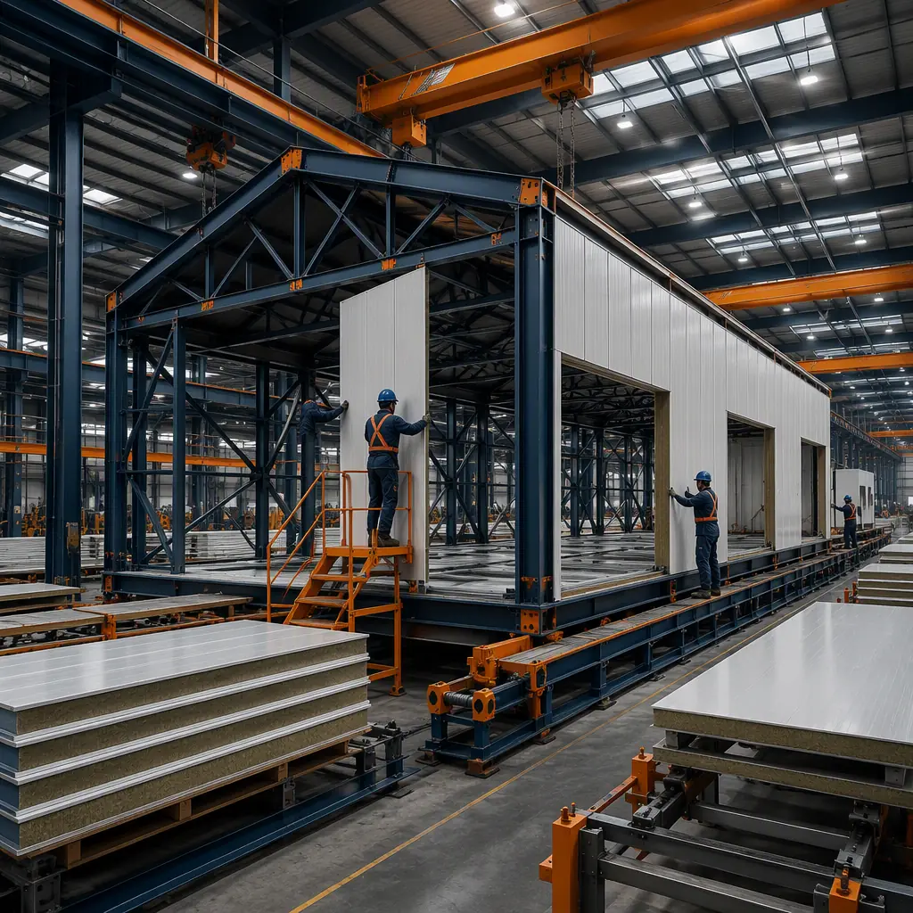

Recycling infrastructure is in a build cycle unlike anything the industry has seen. Extended producer responsibility (EPR) laws are now enacted in six US states covering packaging, container deposit schemes are expanding in Europe and Australia, and the US EPA has set a national recycling rate target of 50% by 2030. The result: municipalities, waste haulers, and private investors are all trying to build material recovery facilities (MRFs) at once — and hitting a wall of 18–30 month conventional construction timelines and soaring steel and labor costs. Modular prefabricated construction changes the equation by building the MRF as factory-manufactured structural modules: sorting halls, baler rooms, tip floors, and administration wings arrive as steel-framed modules and are set in weeks rather than seasons. This guide covers the MRF building program, equipment integration, and the cost and phasing math that makes modular delivery attractive for recycling programs. The process-equipment pattern parallels modular water and wastewater treatment facility construction.

The MRF Building Boom
The demand drivers are structural, not cyclical. The EPA reports that the US recycling rate has stagnated near 32% for a decade while waste generation grew to 292 million tons per year; meeting the 2030 target requires roughly 100–150 new or expanded MRFs nationally. EPR laws in California, Oregon, Colorado, Maine, and Minnesota require producers to fund collection and processing infrastructure, creating a wave of publicly tendered MRF projects. Meanwhile, the equipment inside a modern single-stream MRF — optical sorters, eddy current separators, ballistic separators, and balers — has a 10–15 year replacement cycle, meaning the building must be designed for equipment retrofit from day one. Conventional MRF construction suffers from the same disease as all heavy industrial building: sequential trades, weather exposure, and a critical path measured in years. Modular delivery compresses the building schedule so the equipment installation — the real heart of the facility — starts sooner.
Types of Material Recovery Facilities
MRFs come in three basic configurations, and the building program differs for each:
- Single-stream MRFs. Commingled recyclables (paper, plastics, metals, glass) from residential curbside programs. The most common type, processing 50–1,000 tons per day (tpd), with a large sorting hall (40,000–150,000 sq ft) dominated by conveyor and sorter lines.
- Dual-stream MRFs. Fiber and containers collected separately, requiring two parallel processing lines — roughly 20–30% more floor area and sorting equipment than single-stream at equal tonnage.
- Commercial / C&D MRFs. Construction and demolition debris or commercial recyclables, with heavier handling equipment, lower sorting automation, and larger tip floor areas.
Across all types, the building is a clear-span industrial structure with a tipping floor, a sorting mezzanine, a baler room, and outbound bale storage — plus administration and employee welfare spaces. The clear-span industrial envelope is the same building type covered in modular industrial warehouse construction, extended with process-specific modules.

The Modular MRF Building Package
A modular MRF is assembled from factory-built structural modules that map directly to the process zones:
- Tip floor module. The receiving area where collection trucks dump loads — a reinforced concrete-floor structure with deep steel framing to carry live loads of 1,500–2,500 psf from loaders and material piles. Modules arrive with the structural frame, wall panels, and dust-control systems factory-installed.
- Sorting hall modules. The clear-span processing area housing conveyors, screens, and sorters. Modular steel trusses and columns deliver 60–100 ft clear spans without interior columns — essential for uninterrupted conveyor runs — and the module package can be designed around the sorter equipment layout from the start.
- Baler room module. A reinforced structure for the balers and their hydraulic systems, with floor drains, ventilation, and fire suppression pre-engineered. Baler rooms carry high point loads (a 100-ton baler concentrates several tons per square foot on its pad) and need the structural detailing done at design time.
- Administration and welfare modules. Offices, control room, locker rooms, and break areas — standard commercial modules connected to the industrial envelope, with the control room positioned for sightlines over the sorting floor.
The factory-build discipline that makes this work — tolerances, QC, and integration — is the same system documented in modular factory QC systems.

Equipment Integration — Sorting Lines, Balers & Conveyors
The building is the servant of the equipment in an MRF, and modular delivery inverts the conventional relationship: instead of building the shell and then fitting equipment into whatever space exists, the modules are engineered around the equipment layout. Conveyor runs, sorter positions, baler pads, and mezzanine levels are defined at design stage, and the module frames are fabricated with the embeds, penetrations, and structural supports the equipment needs. Factory coordination with the equipment vendor means chutes, electrical raceways, and compressed air lines are pre-positioned rather than field-modified. The integration planning mirrors the process-heavy approach in modular heavy industrial construction, and the mechanical systems follow modular MEP integration.
Cost & Timeline — Modular vs. Conventional MRF
| Item | Conventional | Modular |
|---|---|---|
| Building design & engineering | $0.8–1.5M / 4–6 months | $0.5–1.0M / 2–3 months |
| Building construction (100,000 sq ft) | $18–28M / 14–20 months | $15–23M / 6–9 months |
| Equipment (sorting line, balers) | $6–15M / installed after shell | $6–15M / installed in parallel |
| Site work, foundations & utilities | $2–4M / sequential | $1.8–3.5M / parallel with factory |
| Total Program | $27–49M / 24–30 months | $23–43M / 10–14 months |
The 12–15% capital saving matters, but the schedule is the headline: a facility that starts processing 12–18 months earlier converts a 200-tpd MRF's roughly $8–15 million annual revenue (at $35–60 per ton processing revenue plus commodity value) into 1–2 extra years of operation within the same funding round. Program economics follow the framework in our 2026 modular cost guide.

Environmental & Safety Compliance
MRFs sit under a dense compliance stack that modular construction turns into factory-documented facts. Dust control is regulated (occupational exposure limits and neighborhood nuisance rules), so the building's dust-collection system is engineered into the modules with ducting pre-installed. Fire risk from baled materials and hydraulic systems drives sprinkler and suppression design, factory-installed and tested. Stormwater from the tipping area — which can carry leachate and litter — must be contained and treated, so the tip floor drainage is embedded in the module design rather than added as a retrofit. The environmental engineering pattern is the same one documented in modular water and wastewater treatment construction, and the embodied-carbon advantages of factory-built steel are quantified in our embodied carbon guide.
Phased & Expandable Design
Recycling programs grow in predictable steps — collection contracts expand, EPR obligations ramp up, and commodity prices shift — so the best MRF designs phase capacity. A modular facility can open with a 150-tpd single line and add a second sorting line, additional balers, or a full building extension as tonnage grows, because each addition is another module purchase with the same design language, foundations, and crane plan. This mirrors the expansion logic in modular building additions and expansions and the phasing strategy in modular construction project timelines. Public owners also benefit from the procurement path: modular delivery fits RFP structures that value schedule certainty and fixed pricing, covered in our RFP and procurement guide.
Is a Modular MRF Right for Your Program?
Modular delivery delivers the strongest value for MRFs with hard opening deadlines (EPR compliance dates, grant spend-down periods), for programs that need to retrofit equipment over a 10–15 year life (the module design accommodates future equipment changes), and for sites where winter weather or a thin local trades market would stretch a conventional schedule. For a small drop-off center or a simple transfer station with minimal processing, conventional construction may be simpler. For the standard 100–500-tpd single-stream MRF — tip floor, sorting hall, balers, and administration — modular construction compresses the building phase from the industry's longest lead time into the fastest, most predictable part of the program, with the equipment integration engineered in the factory rather than improvised in the field.